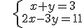
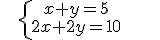
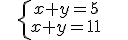

Ecuaciones y sistemas
sistemas de ecuaciones lineales
Siempre se puede reducir un sistema de dos ecuaciones lineales a uno de la forma:

Una solución del sistema lo ha de ser de las dos ecuaciones.
Por ejemplo:
 es un sistema de ecuaciones. x = 4, y = -1 es su solución
Un sistema de ecuaciones lineales puede tener:
–Una solución: compatible determinado. Ejemplo:
x = 4; y = -1 es su ÚNICA solución–Infinitas soluciones: compatible indeterminado. Ejemplo:
tiene infinitas soluciones–Ninguna solución: incompatible. Ejemplo:
no tiene solución
Obra publicada con Licencia Creative Commons Reconocimiento No comercial Compartir igual 3.0